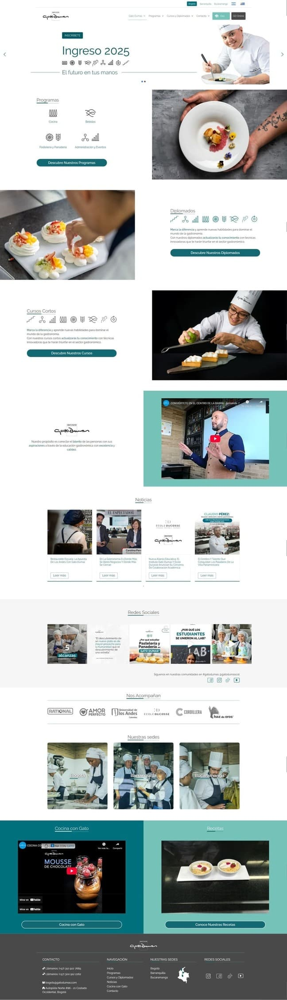
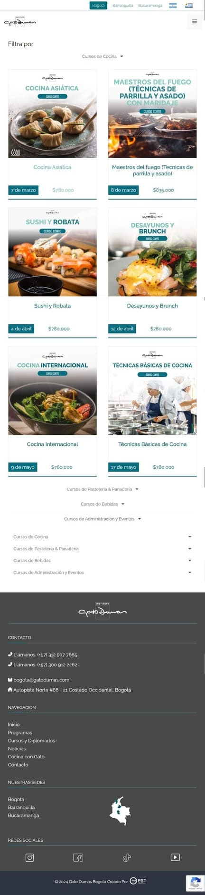
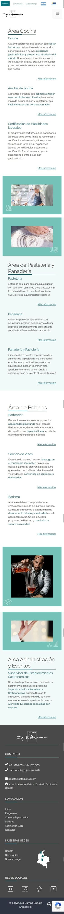
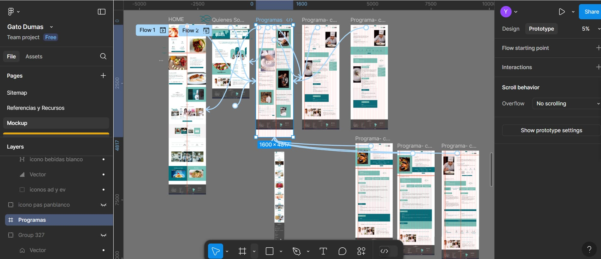

Gato Dumas – Rediseño y Desarrollo Web
Descripción: Dirección e implementación del la web indeal inversiones, desde el costumer journey, wireframe y validación de Diseño e implementación en la web en todas sus resoluciones.
📍 Proyecto: Rediseño y optimización de la pagina web para una escuela de gastronomía.
🌐 Sitio web: GatoDumas.com.co
🎯 Rol: Desarrolladora Web & UX/UI Directora.
📅 Duración: Febrero 2024 - Abril 2024.
Descripción: Dirección e implementación del la web indeal inversiones, desde el costumer journey, wireframe y validación de Diseño e implementación en la web en todas sus resoluciones.
📍 Proyecto: Rediseño y optimización de la pagina web para una escuela de gastronomía.
🌐 Sitio web: GatoDumas.com.co
🎯 Rol: Desarrolladora Web & UX/UI Directora.
📅 Duración: Febrero 2024 - Abril 2024.
Herramientas Utilizadas
🛠️ WordPress | CSS | Figma







Rediseño
Optimización
Descripción del Proyecto
Adaptación de la línea gráfica de Argentina para el mercado colombiano.
Creación de wireframes y mapas de navegación en Figma, asegurando usabilidad y funcionalidad.
Implementación y personalización en WordPress, garantizando un sitio adaptable y escalable.
Desarrollo de componentes reutilizables y formularios especializados para cada curso.
Optimización del sistema de gestión de cursos, permitiendo la programación automática de fechas de lanzamiento y finalización.
Creación de filtros dinámicos por categoría, mejorando la navegación y búsqueda de cursos.
Lideré el rediseño e implementación del sitio web de Gato Dumas, una escuela de gastronomía con presencia en Bogotá, Barranquilla y Bucaramanga. El proceso incluyó:
Resultados Clave
✔️ Mejoras en la usabilidad y experiencia del usuario, facilitando el acceso a la oferta académica.
✔️ Automatización del proceso de actualización de cursos, reduciendo tiempos de gestión.
✔️ Implementación de un sistema escalable, optimizando la administración de programas educativos.

Tu próximo proyecto merece una UX increíble.
Escríbeme